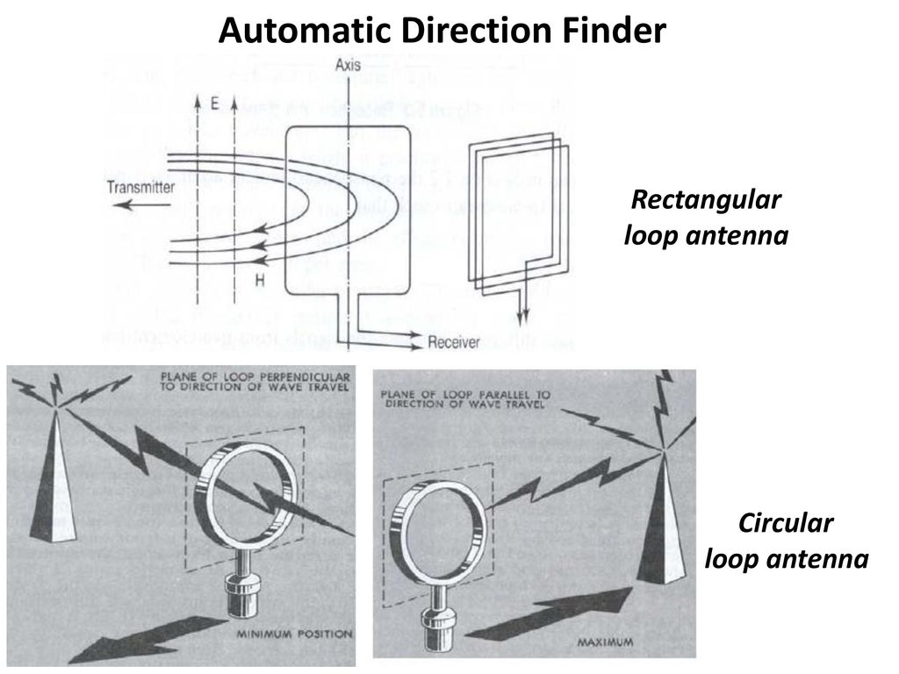
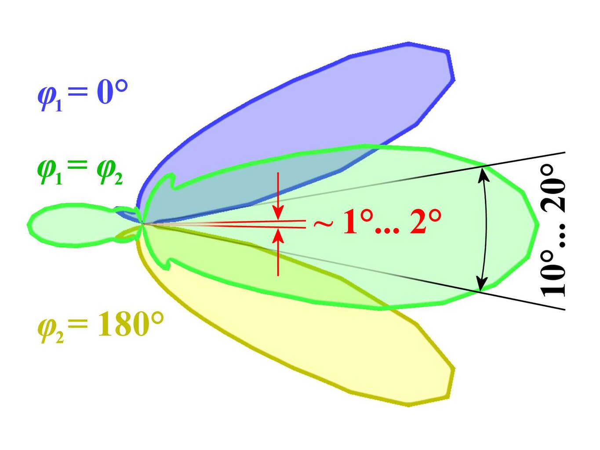
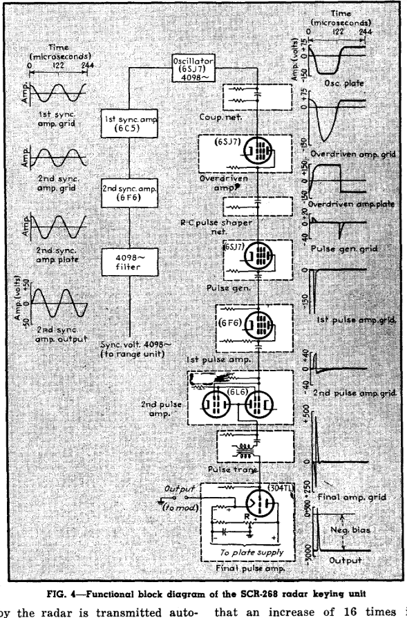
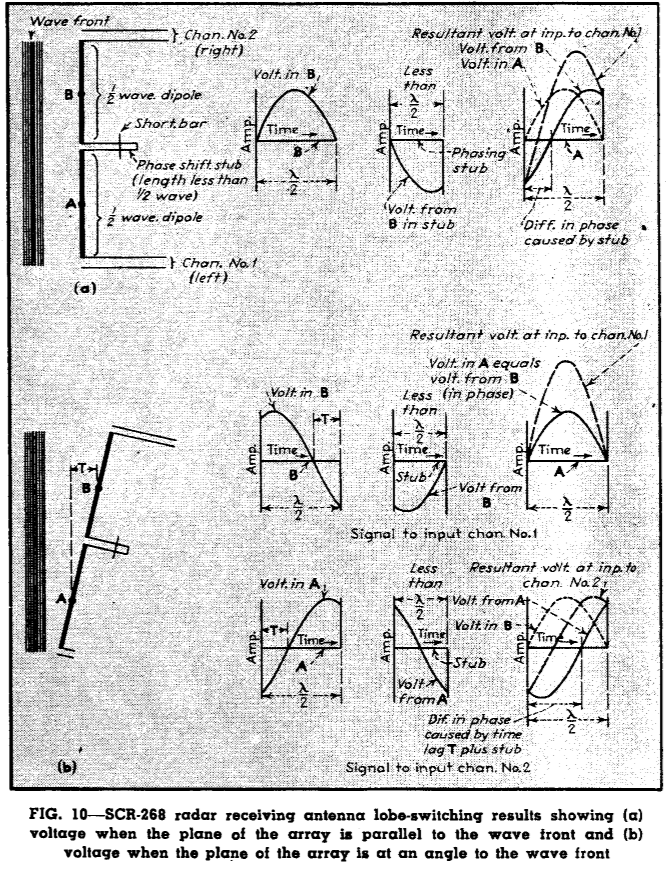
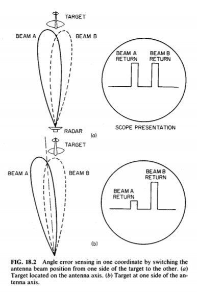
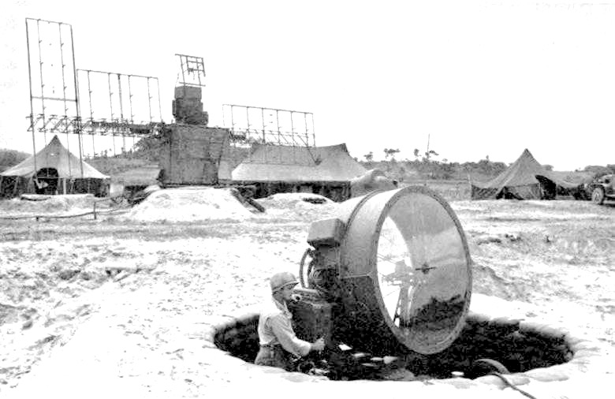

미육군의 레이더 개발 이야기 (3) - lobe switching이란 무엇인가?
게시: 2024-05-30T06:30:52+09:00
<전파 발신원 찾는 것 쉽다며?> 전파 발신원의 방향이 어디인지는 헤르츠 박사가 전파의 존재를 입증한 초기부터 그 탐지 원리가 알려졌던 것. 즉, 루프 안테나의 각도에 따라 신호 강도가 달라지므로, 루프 안테나를 빙글빙글 돌려보면 그 방향을 잡을 수 있었음. 문제는 그런 식으로 미세한 강도의 차이를 사람의 눈 또는 귀로 잡아내는 것이 그닥 정확하지 않았다는 것.

(루프 안테나를 이용한 전파 발신원 방향 탐지기의 기본 원리)
(야기 안테나는 이 그림처럼 송신 뿐만 아니라 수신에서도 전파 발신원의 방향을 찾는데 사용될 수 있음. https://hackaday.com/2021/08/19/wheres-that-radio-a-brief-history-of-direction-finding/ 참조.)
전편에서 언급했듯이, 유인 전투기를 적기 근처로 유도하기 위한 대공 레이더의 경우엔 1도~2도 정도의 차이는 그렇게 큰 문제가 되지 않았지만, 포격 조준용 레이더는 오차가 0.2도 이하로 정확해야 함. 특히나 비교적 빠른 속도로 움직이는 항공기를 조준해야 하는 대공포 조준용 레이더의 경우엔 더더욱 불가능. 따라서 전통적인 루프 안테나를 이용한 방법 말고, 레이더의 해상도를 높이기 위한 뭔가 획기적인 다른 방법이 필요했음. <Lobe switching이란 무엇인가?> 레이더의 해상도를 높이려면 레이더 빔(beam), 즉 lobe를 더 좁게 만들면 됨. 가령 메인 로브의 퍼짐각(angular spread)이 0.2도로 거의 직선에 가깝다면, 레이더가 268도 방위각을 향했을 때 거기서 뭔가 신호가 잡힌다면 그냥 268도 +- 0.2도 내에 적기가 있는 것임. 그러나 그렇게 lobe를 좁게 만들려면 1940년 초반 가능했던 1.5m 파장보다 훨씬 더 높은 주파수의 짧은 파장을 써야 했음. 하지만 인간의 의지는 정말 대단하여, 이렇게 메인 로브의 퍼짐각이 큰 상황에서도 기어코 더 정확한 레이더 해상도를 얻을 방법을 찾아냄. 이건 미육군이 세계 최초로 구상한 방법은 아니고, 어떻게 보면 1930년대 독일이 개발하여 사용하기 시작했던 단거리용 전파 항법 유도 체계인 로렌츠(Lorenz) 시스템과 유사한 개념 (https://nasica1.tistory.com/668)으로서, 두 개의 로브를 사용하는 것. 즉, 서로 약간만 겹치도록 비스듬하게 배치된 두 개의 로브를 이용하여 사방을 훑다가, 두 개의 로브로부터 동일한 강도의 반사파가 돌아오는 방향이 감지된다면 거기에 적기가 있는 것. 그런데 이렇게 말하면 쉬운 것 같지만 실제로 그 아이디어를 구현하는 것은 또 다른 문제. 가령 두 개의 로브는 같은 source에서 나오는 전파를 써야 할까? 같은 source에서 나오는 것을 쓴다면 서로의 반사파를 어떻게 구별하지? 등등 복잡한 기술적 문제가 많음. 미육군이 선택한 해결법은 lobe switching. 로브 스윗칭은 글자 그대로, 레이더 빔, 즉 lobe의 방향을 두 개의 약간 다른 각도 또는 위치 사이에서 교대로 바꾸는 것을 의미.

(아주 단순화한 lobe switching을 설명하는 그림. 다이폴(dipole) 안테나의 양쪽 절반이 같은 위상 변위(phase shift)를 가진 전파 신호를 받을 때, 주방향쪽으로 메인 로브가 형성되지만, 이 메인 로브를 이용한 방위각 측정은 메인 로브의 퍼짐각이 너무 넓으므로 부정확. 대신 안테나에 반대 위상의 신호를 주면, 최소한의 겹침을 가진 두 개의 큰 로브가 생기는데 그 최소한의 겹침각을 측정하는 것이 더 정확. 이 설명은 위키피디아의 것을 그대로 가져왔지만 사실 이 설명만 읽으면 무슨 소리인지 이해가 안감.) 윗 그림을 보면 두 세트의 안테나 배열(array)을 약간 비스듬하게 배치하여 서로 비스듬하게 겹치는 로브 2개를 만들어내는 것이 lobe switching의 핵심처럼 보이지만, 실은 그렇지는 않음. 미육군이 채택한 방식은 정반대로서, 송신은 하나의 안테나 array에서 하나의 로브를 만드는 것으로 하고, 수신할 때 lobe switching을 수행하는 것. 그것도 수신 안테나 2세트를 서로 비스듬한 각도로 물리적으로 배치하여 lobe switching을 하는 것이 아니라, 쌍극자(dipole) 안테나의 단자에 있는 phase shift stub (위상 변화를 줄 수 있도록 한쪽만 회로에 연결된 일정한 길이의 송신선 일부 토막, 흔히 공진 스터브(resonant stub)라고 불림. 여기서는 파장의 1/2 길이를 사용. 아래 그림 Fig-10의 왼쪽 상단 부분 참조)을 이용하여, 양쪽 끝에서 수신되는 반사파의 위상 차이를 포착하도록 한번은 왼쪽 끝에서 수신되는 전파를 활용하고, 다음 번은 오른쪽 끝에서 수신되는 전파를 번갈아 가며 활용하는 것이 로브 스윗칭의 핵심.

(1945년 9월호 Electronics 잡지에 실린 SCR-268 레이더의 keying unit, 즉 신호 생성기의 block diagram. 이 잡지 기사를 보면 레이더파 생성에 무슨 진공관을 어떤 배열로 몇 개나 사용했는지와 같은 기술적 상세 내용과 함께 각종 다이어그램이 너무나 자세히 나오는데, 이 lobe switching 기술을 사용한 SCR-268 레이더는 이미 1944년 11월에 기밀에서 해제되었기 때문에 가능했던 일. Cavity magnetron의 도입으로 인해 낡은 기술이 되었다고 해도 아직 전쟁이 한창 진행 중인데 그렇게 일부러 기밀 해제를 시켜주는 것이 우리로서는 이해가 안 가는 일인데, 이 기사에 실린 설명을 보면 이미 SCR-268 레이더는 그 실물과 운용 요원, 매뉴얼 등이 통째로 독일군이나 일본군에게 여러 차례 포획된 바가 있기 때문에 기밀 유지의 이유가 없어졌다고 함. 이 블로그에서 소개한 어설프고 불충분한 설명이 마음에 안 드시는 분들은 실제 기사를 읽어보시기 바람. https://www.radartutorial.eu/19.kartei/11.ancient/pubs/elec-09-1945-scr-270.pdf )

(SCR-268 레이더에 사용된 lobe switching에 대한 설명 그림. (a)는 반사파가 안테나 배열에 평행하게 닿을 때의 신호 전압을 보여주고, (b)는 반사파가 비스듬하게 들어올 때의 신호 전압을 보여줌.) 기술적 설명은 나도 제대로 이해했다고 말할 수 없으므로 여기서 생략. 다만 핵심은 레이더 운용원이 CRT 화면에서 보게 되는 것이 연달아 나오는 2개의 peak라는 것. 이 peak들은 각각의 lobe에서 포착된 반사파 신호인데, main lobe가 더듬은 공중 목표물이 메인 로브의 왼쪽에 있느냐 오른쪽에 있느냐에 따라 두 peak 중 어느 하나가 더 높게 나오게 됨. 그러니까 레이더 운용원은 화면에 보이는 두 개의 peak가 정확히 동일한 높이로 나올 때까지 레이더 안테나 방향을 왼쪽 오른쪽으로 약간씩 조절하면 되는 것.

(이 그림을 보면 마치 SCR-268 레이더가 한번은 beam A를 쏘고 바로 다음 번은 beam B를 쏘는 식으로 lobe switching을 한 것처럼 보이지만, 실은 실제로 저렇게 2개의 beam을 쏘았던 것은 아니고 반사파를 수신할 때 저렇게 2개의 lobe를 감지했다고. 아무튼 SCR-268 레이더의 A-scope에서 보이는 것은 실제로 저렇게 2개의 peak가 보였으며, 저 두 peak의 높이가 같으면 레이더 안테나가 목표물을 정확히 가리키는 것이라고 보면 됨.)
이렇게 lobe switching을 이용한 결과, 미육군은 퍼짐각이 9~12도나 되는 메인 로브를 가지고도 훨씬 더 정확한 방위각 측정이 가능했음. 다만... 두 개의 peak 높이를 정확하게 맞추는 것 역시 사람의 눈으로 하는 것인지라 이런 식으로 측정한 방위각의 오차는 약 2도에 달했음. 이 정도의 각도면 해안포 조준은 물론 대공포 조준에 사용하기에는 너무 오차가 큰 것. 그래서 결국 실패인가? 아님. 어차피 인간에겐 하나님이 주신 초정밀 탐지 장치인 eyeball Mk. I (눈)이 있었음. 최종 조준은 사람이 눈으로 하도록 하되, 어차피 대공포 조준에 레이더가 필요한 이유는 야간에 폭탄을 떨구러 오는 야간 폭격기를 잡기 위함이니, 이 lobe switching을 이용하는 레이더를 이용하여 강력한 탐조등을 조준하면 됨, 뒤에 설명할 SCR-268 레이더에서는 포착한 항공기의 방위각과 고도, 거리를 신호선을 통해 Sperry M-4 gun director와 함께 탐조등으로 직접 전달하도록 되어 있었음.

(SCR-268 레이더에 연결된 탐조등. 좁은 탐조등 불빛으로 드넓은 하늘을 훑으며 적 폭격기를 찾는 것은 어려운 일이지만, 레이더가 2도 정도의 오차로 방위각과 고도를 알려주면 매우 쉬운 일이 됨.) 그런데 잠깐, 고도라고? 미해군의 CXAM radar는 고도 측정을 못해서 그토록 많은 배들이 폭탄을 얻어 맞고 많은 사람들이 죽었는데, 미해군에서 컨닝을 하여 만든 육군 SCR-268 레이더에서는 고도 측정이 가능했다고? 그 이야기는 다음 주에...